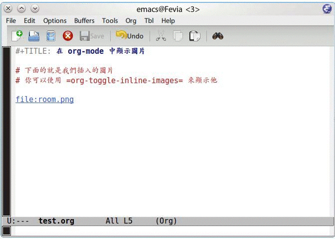

emacs 除了是非常強大的文件編輯器，事實上 emacs 也能夠顯示圖片在緩衝區中， 也就是說當你編輯文章的時候，你可以直接觀看你要插入的圖片，而不需要再打 開一個圖片瀏覽器來使用。
在 org-mode 中，提供了一個 org-toggle-inline-images 的命令，可以將你插 入的圖片顯示出來，就如下面的截圖一樣。

修改顯示圖片的大小
預設的圖片是顯示原圖大小，但是有些時候我們希望是觀看圖片實際上輸出成網 頁、PDF 的大小，這時後就必須修改一下 org-image-actual-width 這個變數。
在 org-mode 中，這個變數具有以下幾種可以設定的類型
注意：實際上 emacs 是透過 imagemagick 來將圖片進行轉換，因此編譯 emacs 的 時候必須將 imagemagick 也編譯進去。
設定為 t
若你將這個變數設定為 t 的話，代表說顯示圖片都使用原始的圖片大小。
(setq org-image-actual-width t)設定為某個數值
若將這個變數設定為某個數值的話，emacs 會透過 imagemagick 將圖片縮小到 你所設定的數值。也就是說，任何圖片都會變成你所設定的寬度的大小。
(setq org-image-actual-width 300) ; Set width to 300
設定為 Number List
設定成 Number List 的話，則 org-mode 會嘗試尋找你額外進行的 #+ATTR.* 設定，若尋找失敗的話，則會變成使用你的寬度設定。
也就是說，如果我們在我們的 .emacs 加上以下的設定
(setq org-image-actual-width '(300)) ; Fallback to width 300
則如果你在 org-mode 時，有找到 #+ATTR.* 的設定，則會使用 #+ATTR.* 設定，反之使用你在 .emacs 裏面的設定。
#+CAPTION: 設定圖片寬度為 100 #+ATTR_HTML: :width 100 file:data/2013/pict/test.png
設定為 nil
若你希望當自己有設定 #+ATTR.* 時才使用自己的設定，其他時間都使用 預設的圖片大小的話，則設定這個變數為 nil 。
(setq org-image-actual-width nil)
關於 org-image-actual-width 的實際定義
我目前使用的 org-mode 版本為 8.0.5，在程式碼裏面實際上這個變數的定義如 下
(defcustom org-image-actual-width t "Should we use the actual width of images when inlining them? When set to `t', always use the image width. When set to a number, use imagemagick (when available) to set the image's width to this value. When set to a number in a list, try to get the width from any #+ATTR.* keyword if it matches a width specification like #+ATTR_HTML: :width 300px and fall back on that number if none is found. When set to nil, try to get the width from an #+ATTR.* keyword and fall back on the original width if none is found. This requires Emacs >= 24.1, build with imagemagick support." :group 'org-appearance :version "24.4" :package-version '(Org . "8.0") :type '(choice (const :tag "Use the image width" t) (integer :tag "Use a number of pixels") (list :tag "Use #+ATTR* or a number of pixels" (integer)) (const :tag "Use #+ATTR* or don't resize" nil)))